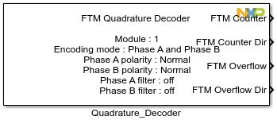
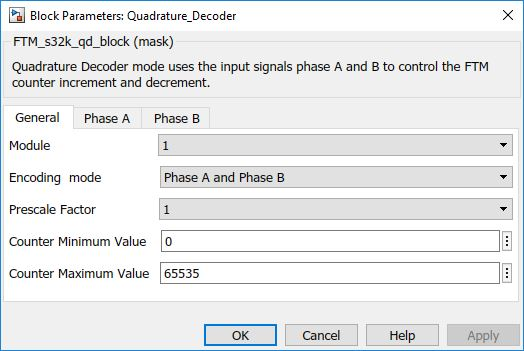
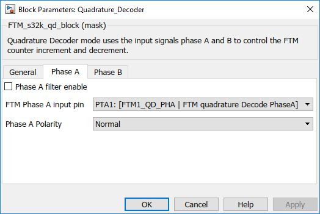
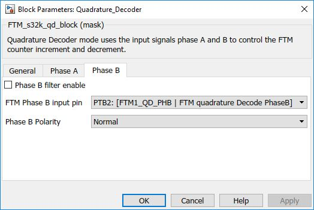

Quadrature Decoder Block
The main functionality of the block is to take input signals phase A and phase B to control the FTM counter increment and decrement.
Block Image
Inputs:
- None
Outputs:
- FTM Counter value
- FTM Counter direction - Indicates that the counting direction is up
- FTM Overflow - Indicates that the FTM counter changed from maximum value to minimum value or vice versa
- FTM Overflow direction - Indicates that the counting was up when the FTM counter overflow occurred
Parameters and Dialog Box
The block dialog consists of the following tabs:
General
The General tab contains the following parameters:
FTM Module
Select which FTM module to use.
- Range: 1 – 2
Encoding Mode
Initial frequency of PWM output signals
- Phase A and Phase B
- Count and Direction
Prescale factor to apply on input
Initial frequency of PWM output signals
- 1 – 2 – 4 – 8 – 16 – 32 – 64 – 128
Counter minimum value
Starting value of FTM counter
- Range: 0 – 65535
Counter maximum value
The largest value on the FTM counter
- Range: 1 – 65535
Phase A
The Phase A tab contains the following parameters:
Phase A Filter Enable
When enabled will show value field
- Enable/Disable
Phase A input pin
Pin selection
- Pin list varies depending on the selected MCU in the main config block.
Phase polarity
Pin selection
- Normal
- Inverted
Phase B
The Phase B tab contains the following parameters:
Phase B Filter Enable
When enabled will show value field
- Enable/Disable
Phase B input pin
Pin selection
- Pin list varies depending on the selected MCU in the main config block.
Phase polarity
Pin selection
- Normal
- Inverted
Block Dependency
- None
Block Miscellaneous Details
- None